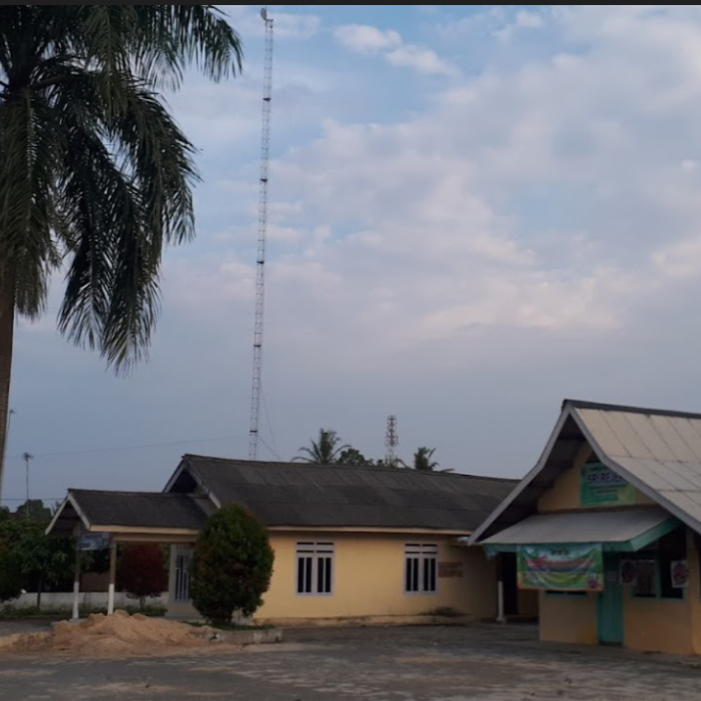

Desa Bangun Rejo yang memiliki arti Berdiri untuk Makmur merupakan desa yang berada di Kecamatan Gunung Sugih, Lampung Tengah. Desa ini terdiri dari 5 dusun berisikan 12 RT (Rukun Tetangga) dengan luas wilayah sekitar 553.75 ha. Desa ini pertama dibentuk tahun 1954 oleh BRN dengan jumlah awal warga sebanyak 20 orang. Kemudian pada tahun 1956 terbentuk susukan yang dikepalai oleh Bapak Dulah Sajuri selaku kepala susukan. Desa Bangun Rejo terus berkembang dari kampug persiapan hingga menjadi desa devinitif. Masyarakat menjalani kehidupan taat hukum dan menganut kepercayaan yang telah diakui pemerintah, serta membentuk ikatan warga yang harmonis antar dusun serta memiliki kepedulian sosial yang tinggi.
Penduduk di Desa Bangun Rejo mayoritas beragama muslim dan bersuku Jawa dengan jumlah penduduk sekitar 4.304 jiwa yang terdiri dari 2.200 Laki-laki dan 1194 Perempuan berdasarkan sensus penduduk tahun 2019. Mata pencaharian utama penduduk desa adalah petani, buruh, dan pedagang dengan mayoriats 80% merupakan petani. Salah satu keunggulan yang dimiliki desa Bangun Rejo merupakan potensi dari wilayahnya yang luas sehingga cocok digunakan untuk kegiatan bertani dan menjual kayu bakar serta arang.

Desa
Kecamatan
Kota
Provinsi
Luas Wilayah
Batas Sebelah Utara
Batas Sebelah Selatan
Batas Sebelah Timur
Batas Sebelah Barat
: Bangun Rejo
: Gunung Sugih
: Lampung Tengah
: Lampung
: ± 553.75 Ha
: Dusun Kota Sari Kota Gajah
: Desa Purworejo
: Dusun Kauman Kota Gajah
: Desa Buyut Ilir